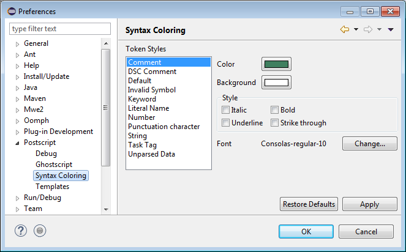

PostScript > Syntax Coloring
preference page to specify how PostScript source code is rendered.
Each token category may be rendered with its own color and style.
PostScript > Syntax Coloring
preference page to specify how PostScript source code is rendered.
Each token category may be rendered with its own color and style.
Use the
PostScript > Syntax Coloring
preference page to specify how PostScript source code is rendered.
Each token category may be rendered with its own color and style.
| Option | Description |
|---|---|
| Color | Specifies the foreground color of the selected element |
| Background | Specifies the background color of the selected element |
| Italic | Makes the selected element italic |
| Bold | Makes the selected element bold |
| Underline | Makes the selected element underlined |
| Strike through | Makes the selected element |
| Font | Specifies the font of the selected element |
Here is what the Syntax Coloring preference page looks like:
